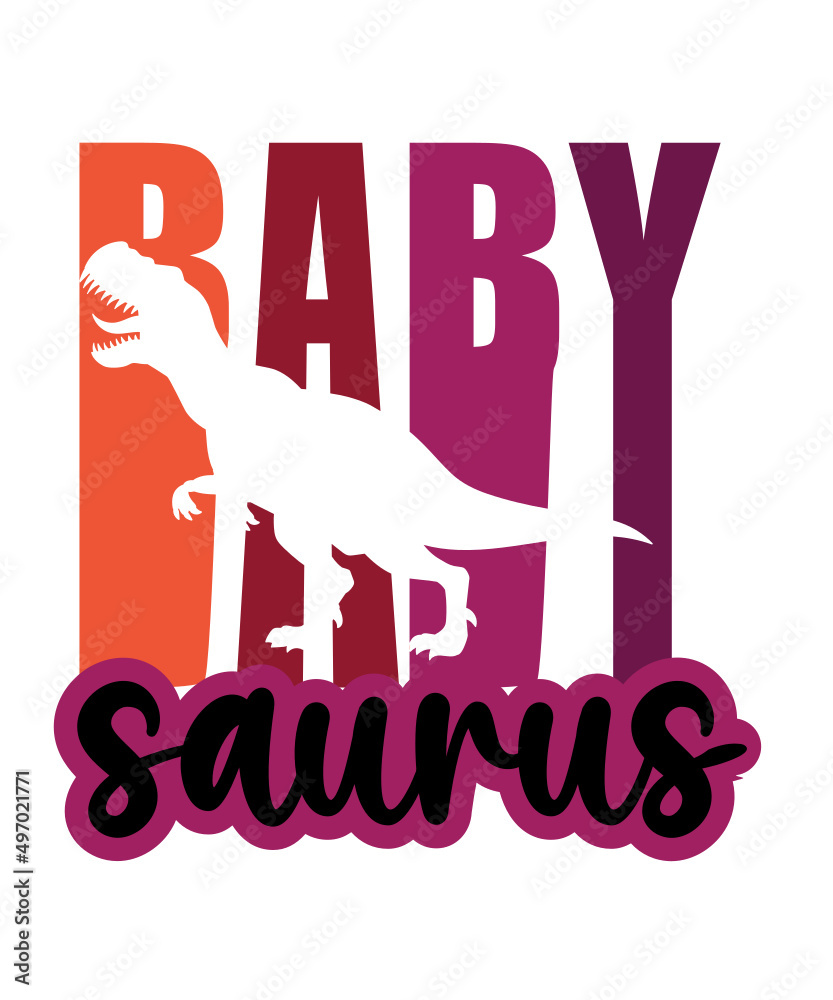
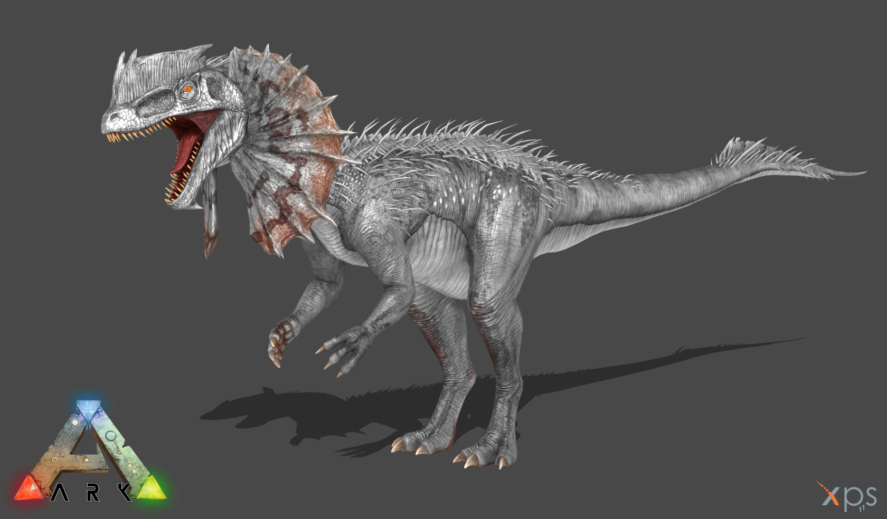
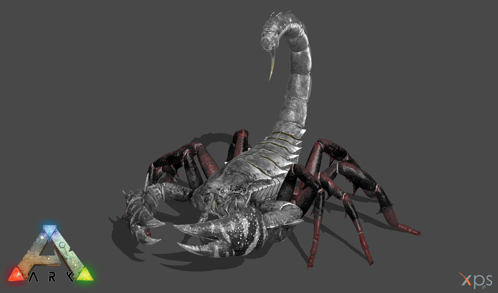
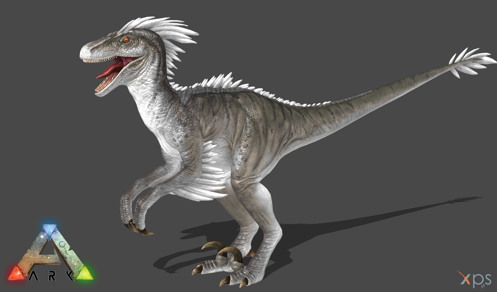
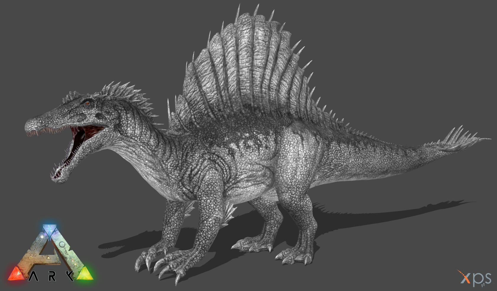

L'encyclopédie complète des dinosaures
Le dilophosaure :

Le dilophosaure appartient à l’époque du jurassique inférieur. C'est l'un des plus anciens grands dinosaures prédateurs. Sa gueule était particulièrement étroite et souple, ses dents pourtant ne semblent pas avoir été faites pour chasser de grandes proies. Il est très vraisemblable qu'il tuait ses victimes à l'aide des griffes qu'il portait aux pattes avant et arrière.
En savoir plus...
Le Ptéranodon :

Le Pteranodon était un des plus grands ptérosaures, des diapsides volants du Crétacé Supérieur (il y a environ 70 millions d’années). Son envergure pouvait atteindre 7,5 mètres.Le Pteranodon ne possédait pas de dent, avait la queue atrophiée et des os creux. Il était donc assez proche des oiseaux. Son régime alimentaire était essentiellement composé de poissons. On peut le reconnaître grâce à la fine crête qui ornait son crâne.
En savoir plus...
Le Pulmonoscorpius :

Le Pulmonoscorpius est une espèce de scorpions géants ayant vécu à l’époque du Carbonifère, il y a 345 à 330 millions d’années environ. Ce mastodonte des arthropodes pouvait mesurer 70 cm de long ! Cela est sans doute dû à la surabondance de dioxygène dans l’air typique du Carbonifère, qui a permis à plusieurs arthropodes et insectes de grande taille de proliférer, tels que l'Arthropleura ou le Meganeura.
En savoir plus...
Le Raptor :

Les Raptors sont une famille éteinte de dinosaures théropodes ressemblant à des oiseaux. Ils étaient des carnivores à plumes de taille petite à moyenne qui ont abondé au cours du Crétacé. On sait maintenant que tous les raptors étaient couverts de plumes, y compris de grandes plumes à pinnules au niveau des ailes et de la queue. Cette hypothèse, d'abord émise au milieu et à la fin des années 1980 a été confirmée par des découvertes fossiles en 1999, représentant un changement important dans la façon dont les dromæosauridés ont toujours été représentés dans l'art et le cinéma
En savoir plus...
Le Spinosaure :

Spinosaurus est un genre de dinosaures théropodes ayant vécu à l'Albien (100 millions d'années) et au Cénomanien (97 millions d'années). Malgrés leur taille imposante, entre 5 et 6 mètre de hauteur et environ 15m de longueur!! , les Spinosaures furent des animaux principalement piscivores, mais aussi capable de se nourrir également d'autres proies comme de jeunes dinosaures et des ptérosaures.
En savoir plus...
Rejoignez-nous sur les réseaux sociaux !
- Facebook
- Twitter
- Instagram